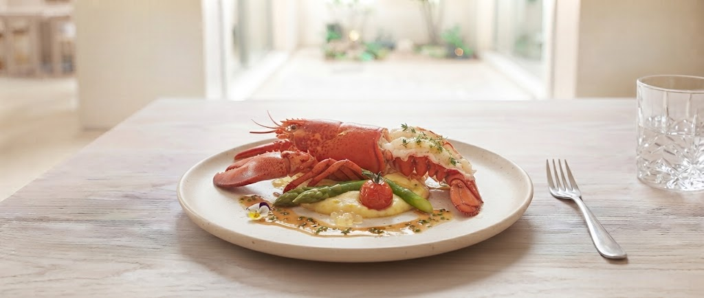

五感で味わう、
静寂と美食。
札幌・宮ケ丘。北海道神宮の荘かな森を望む石造りの洋館で、コートドールは歴史を刻んできました。
重厚な建築と洗練された内装が織りなす非日常の空間。扉を開けた瞬間から、あなたのための特別な物語が始まります。
The Art of French Dining
Sapporo Miyagaoka
LIMITED OFFER
スペシャリテ「日本酒のスフレ」無料贈呈
SCROLL
札幌・宮ケ丘。北海道神宮の荘かな森を望む石造りの洋館で、コートドールは歴史を刻んできました。
重厚な建築と洗練された内装が織りなす非日常の空間。扉を開けた瞬間から、あなたのための特別な物語が始まります。
The Art of French Dining
口の中で淡雪のように消え、鼻に抜ける日本酒のふくよかな香り。
多くの美食家を魅了してきた、不動のスペシャリテ。
Modern French Cuisine

噴火湾のオマール

道産牛のポワレ

ミシュラン北海道特別版一つ星、食べログフレンチ百名店選出。
五代目シェフが目指すのは、素材そのものの声を聞き、極限までシンプルに、それでいて記憶に深く刻まれる味わい。北海道が誇る極上の食材を、フランス料理の伝統技法で高めてまいります。
コートドールがお届けする、新たな美食体験の試み。
ご来店いただいたお客様により深い感動をお届けするため、現在準備中の新サービスです。
お召し上がりいただいた一皿の背景にある、北海道の生産者の想いやシェフのこだわりを綴った特製カードをお渡しします。食卓の余韻を深める特別なコレクターズアイテムです。
お誕生日や結婚記念日のお席に、思い出の楽曲のBGM演出やメッセージ刻印入り特製アニバーサリーデセールなど、心に残る演出をご予約可能に。
「デザートのブランマンジェが絶品。マネージャーさんの接客もスマートで、とても心地よい時間を過ごせました。」
— 記念日でのご利用
「駐車場完備で平日ランチも満足度が高い。パンのおかわりなど細かな気遣いに感動しました。次回はディナーで。」
— ランチでのご利用
HOKKAIDO JINGU SIDE